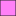
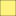
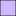

<!doctype html>
<html lang="en">
    <head>
        <meta charset="utf-8">
        <meta http-equiv="X-UA-Compatible" content="IE=edge">
        <meta name="viewport" content="initial-scale=1,user-scalable=no,maximum-scale=1,width=device-width">
        <meta name="mobile-web-app-capable" content="yes">
        <meta name="apple-mobile-web-app-capable" content="yes">
        <link rel="stylesheet" href="css/leaflet.css">
        <link rel="stylesheet" href="css/L.Control.Layers.Tree.css">
        <link rel="stylesheet" href="css/qgis2web.css">
        <link rel="stylesheet" href="css/fontawesome-all.min.css">
        <link rel="stylesheet" href="css/leaflet.photon.css">
        <link rel="stylesheet" href="css/leaflet-measure.css">
        <style>
        html, body, #map {
            width: 100%;
            height: 100%;
            padding: 0;
            margin: 0;
        }
        </style>
        <title></title>
    </head>
    <body>
        <div id="map">
        </div>
        <script src="js/qgis2web_expressions.js"></script>
        <script src="js/leaflet.js"></script>
        <script src="js/L.Control.Layers.Tree.min.js"></script>
        <script src="js/leaflet.rotatedMarker.js"></script>
        <script src="js/leaflet.pattern.js"></script>
        <script src="js/leaflet-hash.js"></script>
        <script src="js/Autolinker.min.js"></script>
        <script src="js/rbush.min.js"></script>
        <script src="js/labelgun.min.js"></script>
        <script src="js/labels.js"></script>
        <script src="js/leaflet.photon.js"></script>
        <script src="js/leaflet-measure.js"></script>
        <script src="data/reas_2.js"></script>
        <script>
        var highlightLayer;
        function highlightFeature(e) {
            highlightLayer = e.target;

            if (e.target.feature.geometry.type === 'LineString' || e.target.feature.geometry.type === 'MultiLineString') {
              highlightLayer.setStyle({
                color: '#ffff00',
              });
            } else {
              highlightLayer.setStyle({
                fillColor: '#ffff00',
                fillOpacity: 1
              });
            }
            highlightLayer.openPopup();
        }
        var map = L.map('map', {
            zoomControl:false, maxZoom:28, minZoom:1
        }).fitBounds([[-18.468973152498275,-55.07443746251598],[-18.23225716777797,-54.71894868827743]]);
        var hash = new L.Hash(map);
        map.attributionControl.setPrefix('<a href="https://github.com/tomchadwin/qgis2web" target="_blank">qgis2web</a> &middot; <a href="https://leafletjs.com" title="A JS library for interactive maps">Leaflet</a> &middot; <a href="https://qgis.org">QGIS</a>');
        var autolinker = new Autolinker({truncate: {length: 30, location: 'smart'}});
        // remove popup's row if "visible-with-data"
        function removeEmptyRowsFromPopupContent(content, feature) {
         var tempDiv = document.createElement('div');
         tempDiv.innerHTML = content;
         var rows = tempDiv.querySelectorAll('tr');
         for (var i = 0; i < rows.length; i++) {
             var td = rows[i].querySelector('td.visible-with-data');
             var key = td ? td.id : '';
             if (td && td.classList.contains('visible-with-data') && feature.properties[key] == null) {
                 rows[i].parentNode.removeChild(rows[i]);
             }
         }
         return tempDiv.innerHTML;
        }
        // add class to format popup if it contains media
		function addClassToPopupIfMedia(content, popup) {
			var tempDiv = document.createElement('div');
			tempDiv.innerHTML = content;
			if (tempDiv.querySelector('td img')) {
				popup._contentNode.classList.add('media');
					// Delay to force the redraw
					setTimeout(function() {
						popup.update();
					}, 10);
			} else {
				popup._contentNode.classList.remove('media');
			}
		}
        var zoomControl = L.control.zoom({
            position: 'topleft'
        }).addTo(map);
        var measureControl = new L.Control.Measure({
            position: 'topleft',
            primaryLengthUnit: 'meters',
            secondaryLengthUnit: 'kilometers',
            primaryAreaUnit: 'sqmeters',
            secondaryAreaUnit: 'hectares'
        });
        measureControl.addTo(map);
        document.getElementsByClassName('leaflet-control-measure-toggle')[0].innerHTML = '';
        document.getElementsByClassName('leaflet-control-measure-toggle')[0].className += ' fas fa-ruler';
        var bounds_group = new L.featureGroup([]);
        function setBounds() {
        }
        map.createPane('pane_Satellite_0');
        map.getPane('pane_Satellite_0').style.zIndex = 400;
        var layer_Satellite_0 = L.tileLayer('https://server.arcgisonline.com/ArcGIS/rest/services/World_Imagery/MapServer/tile/{z}/{y}/{x}', {
            pane: 'pane_Satellite_0',
            opacity: 1.0,
            attribution: '',
            minZoom: 1,
            maxZoom: 28,
        });
        layer_Satellite_0;
        map.addLayer(layer_Satellite_0);
        map.createPane('pane_GoogleSatellite_1');
        map.getPane('pane_GoogleSatellite_1').style.zIndex = 401;
        var layer_GoogleSatellite_1 = L.tileLayer('https://mt1.google.com/vt/lyrs=s&x={x}&y={y}&z={z}', {
            pane: 'pane_GoogleSatellite_1',
            opacity: 1.0,
            attribution: '',
            minZoom: 1,
            maxZoom: 28,
        });
        layer_GoogleSatellite_1;
        map.addLayer(layer_GoogleSatellite_1);
        function pop_reas_2(feature, layer) {
            layer.on({
                mouseout: function(e) {
                    for (var i in e.target._eventParents) {
                        if (typeof e.target._eventParents[i].resetStyle === 'function') {
                            e.target._eventParents[i].resetStyle(e.target);
                        }
                    }
                    if (typeof layer.closePopup == 'function') {
                        layer.closePopup();
                    } else {
                        layer.eachLayer(function(feature){
                            feature.closePopup()
                        });
                    }
                },
                mouseover: highlightFeature,
            });
            var popupContent = '<table>\
                    <tr>\
                        <td colspan="2">' + (feature.properties['qc_id'] !== null ? autolinker.link(String(feature.properties['qc_id']).replace(/'/g, '\'').toLocaleString()) : '') + '</td>\
                    </tr>\
                    <tr>\
                        <td colspan="2">' + (feature.properties['fid'] !== null ? autolinker.link(String(feature.properties['fid']).replace(/'/g, '\'').toLocaleString()) : '') + '</td>\
                    </tr>\
                    <tr>\
                        <td colspan="2"><strong>matrícula</strong><br />' + (feature.properties['matrícula'] !== null ? autolinker.link(String(feature.properties['matrícula']).replace(/'/g, '\'').toLocaleString()) : '') + '</td>\
                    </tr>\
                    <tr>\
                        <td colspan="2"><strong>denominação</strong><br />' + (feature.properties['denominação'] !== null ? autolinker.link(String(feature.properties['denominação']).replace(/'/g, '\'').toLocaleString()) : '') + '</td>\
                    </tr>\
                    <tr>\
                        <td colspan="2"><strong>tem geo?</strong><br />' + (feature.properties['tem geo?'] !== null ? autolinker.link(String(feature.properties['tem geo?']).replace(/'/g, '\'').toLocaleString()) : '') + '</td>\
                    </tr>\
                </table>';
            var content = removeEmptyRowsFromPopupContent(popupContent, feature);
			layer.on('popupopen', function(e) {
				addClassToPopupIfMedia(content, e.popup);
			});
			layer.bindPopup(content, { maxHeight: 400 });
        }
        function style_reas_2_0(feature) {
            var context = {
                feature: feature,
                variables: {}
            };
            // Start of if blocks and style check logic
            if (exp_reas_2rule0_eval_expression(context)) {
                  return {
                pane: 'pane_reas_2',
                opacity: 1,
                color: 'rgba(35,35,35,1.0)',
                dashArray: '',
                lineCap: 'butt',
                lineJoin: 'miter',
                weight: 1.0, 
                fill: true,
                fillOpacity: 1,
                fillColor: 'rgba(0,8,120,0.5019607843137255)',
                interactive: true,
            };
                }
                else if (exp_reas_2rule1_eval_expression(context)) {
                  return {
                pane: 'pane_reas_2',
                opacity: 1,
                color: 'rgba(35,35,35,1.0)',
                dashArray: '',
                lineCap: 'butt',
                lineJoin: 'miter',
                weight: 1.0, 
                fill: true,
                fillOpacity: 1,
                fillColor: 'rgba(255,0,4,0.5019607843137255)',
                interactive: true,
            };
                }
                else if (exp_reas_2rule2_eval_expression(context)) {
                  return {
                pane: 'pane_reas_2',
                opacity: 1,
                color: 'rgba(35,35,35,1.0)',
                dashArray: '',
                lineCap: 'butt',
                lineJoin: 'miter',
                weight: 1.0, 
                fill: true,
                fillOpacity: 1,
                fillColor: 'rgba(255,1,242,0.5019607843137255)',
                interactive: true,
            };
                }
                else if (exp_reas_2rule3_eval_expression(context)) {
                  return {
                pane: 'pane_reas_2',
                opacity: 1,
                color: 'rgba(35,35,35,1.0)',
                dashArray: '',
                lineCap: 'butt',
                lineJoin: 'miter',
                weight: 1.0, 
                fill: true,
                fillOpacity: 1,
                fillColor: 'rgba(255,234,1,1.0)',
                interactive: true,
            };
                }
                else if (exp_reas_2rule4_eval_expression(context)) {
                  return {
                pane: 'pane_reas_2',
                opacity: 1,
                color: 'rgba(35,35,35,1.0)',
                dashArray: '',
                lineCap: 'butt',
                lineJoin: 'miter',
                weight: 1.0, 
                fill: true,
                fillOpacity: 1,
                fillColor: 'rgba(164,113,255,0.5019607843137255)',
                interactive: true,
            };
                }
            else {
                return {fill: false, stroke: false};
            }
        }
        map.createPane('pane_reas_2');
        map.getPane('pane_reas_2').style.zIndex = 402;
        map.getPane('pane_reas_2').style['mix-blend-mode'] = 'normal';
        var layer_reas_2 = new L.geoJson(json_reas_2, {
            attribution: '',
            interactive: true,
            dataVar: 'json_reas_2',
            layerName: 'layer_reas_2',
            pane: 'pane_reas_2',
            onEachFeature: pop_reas_2,
            style: style_reas_2_0,
        });
        bounds_group.addLayer(layer_reas_2);
        map.addLayer(layer_reas_2);
        const url = {"Nominatim OSM": "https://nominatim.openstreetmap.org/search?format=geojson&addressdetails=1&",
        "France BAN": "https://api-adresse.data.gouv.fr/search/?"}
        var photonControl = L.control.photon({
            url: url["Nominatim OSM"],
            feedbackLabel: '',
            position: 'topleft',
            includePosition: true,
            initial: true,
            // resultsHandler: myHandler,
        }).addTo(map);
        photonControl._container.childNodes[0].style.borderRadius="10px"
        // Create a variable to store the geoJSON data
        var x = null;
        // Create a variable to store the marker
        var marker = null;
        // Add an event listener to the Photon control to create a marker from the returned geoJSON data
        var z = null;
        photonControl.on('selected', function(e) {
            console.log(photonControl.search.resultsContainer);
            if (x != null) {
                map.removeLayer(obj3.marker);
                map.removeLayer(x);
            }
            obj2.gcd = e.choice;
            x = L.geoJSON(obj2.gcd).addTo(map);
            var label = typeof obj2.gcd.properties.label === 'undefined' ? obj2.gcd.properties.display_name : obj2.gcd.properties.label;
            obj3.marker = L.marker(x.getLayers()[0].getLatLng()).bindPopup(label).addTo(map);
            map.setView(x.getLayers()[0].getLatLng(), 17);
            z = typeof e.choice.properties.label === 'undefined'? e.choice.properties.display_name : e.choice.properties.label;
            console.log(e);
            e.target.input.value = z;
        });
        var search = document.getElementsByClassName("leaflet-photon leaflet-control")[0];
        search.classList.add("leaflet-control-search")
        search.style.display = "flex";
        search.style.backgroundColor="rgba(255,255,255,0.5)" 

        // Create the new button element
        var button = document.createElement("div");
        button.id = "gcd-button-control";
        button.className = "gcd-gl-btn fa fa-search search-button";

        // Insert the button at the beginning of the search control
        search.insertBefore(button, search.firstChild);
        last = search.lastChild;
        last.style.display = "none";
        button.addEventListener("click", function (e) {
            if (last.style.display === "none") {
                last.style.display = "block";
            } else {
                last.style.display = "none";
            }
        });
        var overlaysTree = [
            {label: 'Áreas<br /><table><tr><td style="text-align: center;"></td><td>Imóvel Kempper Georreferenciado</td></tr><tr><td style="text-align: center;"></td><td>Imóvel Kempper Não Georreferenciado</td></tr><tr><td style="text-align: center;"></td><td>Imóvel Kempper SNCI</td></tr><tr><td style="text-align: center;"></td><td>Vizinho Georreferenciado</td></tr><tr><td style="text-align: center;"></td><td>Vizinho Cadastrado no SNCI</td></tr></table>', layer: layer_reas_2},
            {label: "Google Satellite", layer: layer_GoogleSatellite_1},
            {label: "Satellite", layer: layer_Satellite_0},]
        var lay = L.control.layers.tree(null, overlaysTree,{
            //namedToggle: true,
            //selectorBack: false,
            //closedSymbol: '&#8862; &#x1f5c0;',
            //openedSymbol: '&#8863; &#x1f5c1;',
            //collapseAll: 'Collapse all',
            //expandAll: 'Expand all',
            collapsed: false, 
        });
        lay.addTo(map);
		document.addEventListener("DOMContentLoaded", function() {
            // set new Layers List height which considers toggle icon
            function newLayersListHeight() {
                var layerScrollbarElement = document.querySelector('.leaflet-control-layers-scrollbar');
                if (layerScrollbarElement) {
                    var layersListElement = document.querySelector('.leaflet-control-layers-list');
                    var originalHeight = layersListElement.style.height 
                        || window.getComputedStyle(layersListElement).height;
                    var newHeight = parseFloat(originalHeight) - 50;
                    layersListElement.style.height = newHeight + 'px';
                }
            }
            var isLayersListExpanded = true;
            var controlLayersElement = document.querySelector('.leaflet-control-layers');
            var toggleLayerControl = document.querySelector('.leaflet-control-layers-toggle');
            // toggle Collapsed/Expanded and apply new Layers List height
            toggleLayerControl.addEventListener('click', function() {
                if (isLayersListExpanded) {
                    controlLayersElement.classList.remove('leaflet-control-layers-expanded');
                } else {
                    controlLayersElement.classList.add('leaflet-control-layers-expanded');
                }
                isLayersListExpanded = !isLayersListExpanded;
                newLayersListHeight()
            });	
			// apply new Layers List height if toggle layerstree
			if (controlLayersElement) {
				controlLayersElement.addEventListener('click', function(event) {
					var toggleLayerHeaderPointer = event.target.closest('.leaflet-layerstree-header-pointer span');
					if (toggleLayerHeaderPointer) {
						newLayersListHeight();
					}
				});
			}
            // Collapsed/Expanded at Start to apply new height
            setTimeout(function() {
                toggleLayerControl.click();
            }, 10);
            setTimeout(function() {
                toggleLayerControl.click();
            }, 10);
            // Collapsed touch/small screen
            var isSmallScreen = window.innerWidth < 650;
            if (isSmallScreen) {
                setTimeout(function() {
                    controlLayersElement.classList.remove('leaflet-control-layers-expanded');
                    isLayersListExpanded = !isLayersListExpanded;
                }, 500);
            }  
        });       
        setBounds();
        </script>
    </body>
</html>
